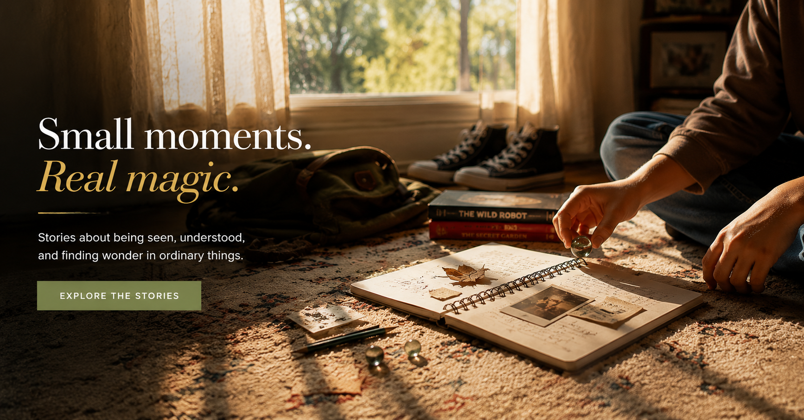

Short letters from a noisy desk.
Not content. Letters. Some short, some honest, some about a kid in a bookshop who said the perfect thing. Subscribe at the bottom of any page.

Notes from a noisy house
How I write small, quiet books in a home with five children, three appointments and one slightly hopeful coffee plant.
Why I write for the quiet kids
For the readers who hand a book back and say only, “that one’s mine now”. This is a letter for you.

A letter to the teachers who hold space
A short thank-you to the educators who notice the kid who notices everything.

Where Max came from
The origin story of a counting boy, a long car ride, and a question I could not put down for two years.

Listening as a love language
The very first scene I wrote for Playing by Ear — and the one that taught me what the book was about.
On finishing things
A short note about how books actually get finished, which is mostly with bad days and a kind editor.